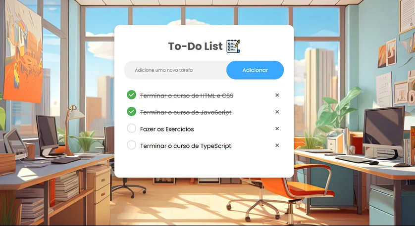
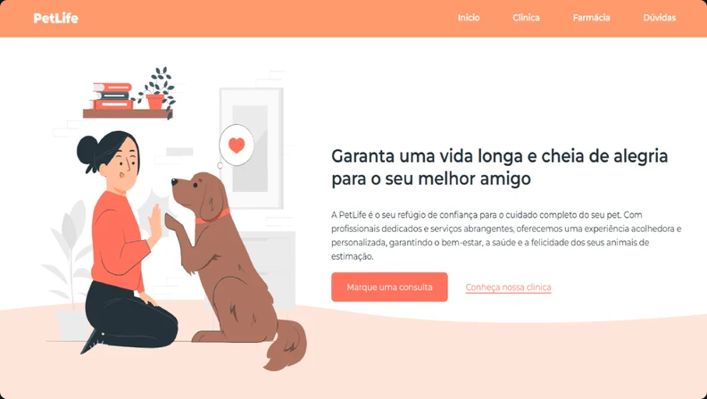
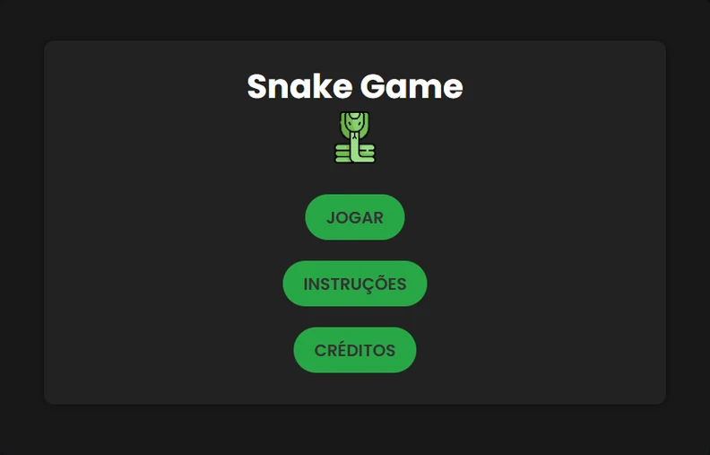

To-Do List
Lista de tarefas com inclusão, conclusão e remoção de itens. Usa LocalStorage para manter os dados no navegador.
Estudante de tecnologia · Natal, RN
Tenho interesse em desenvolvimento de software e uso meus projetos para colocar em prática o que estudo.
Curso Ciência e Tecnologia na UFRN e estou no último semestre de Análise e Desenvolvimento de Sistemas na UnP.

Lista de tarefas com inclusão, conclusão e remoção de itens. Usa LocalStorage para manter os dados no navegador.

Site de estudo para um petshop. Prática de estrutura HTML, estilização e organização do conteúdo.

Uma versão do jogo da cobrinha feita para praticar lógica de programação e interação com a página.
Também fiz uma calculadora, uma interface de login, um relógio digital, uma página Link Bio e um projeto de redes no Cisco Packet Tracer.
Ver repositórios no GitHubMeu foco é seguir na área de desenvolvimento. Estou construindo minha base com a graduação, cursos e projetos de estudo.
Além dos projetos web, estudo C, C++, Python, C# e PHP. Utilizo Git, GitHub e VS Code no dia a dia dos estudos.
Depois de Ciência e Tecnologia, pretendo seguir para o segundo ciclo em Engenharia da Computação na UFRN.
Para conversar sobre uma oportunidade ou um projeto:
andrefelipe13pp@gmail.com